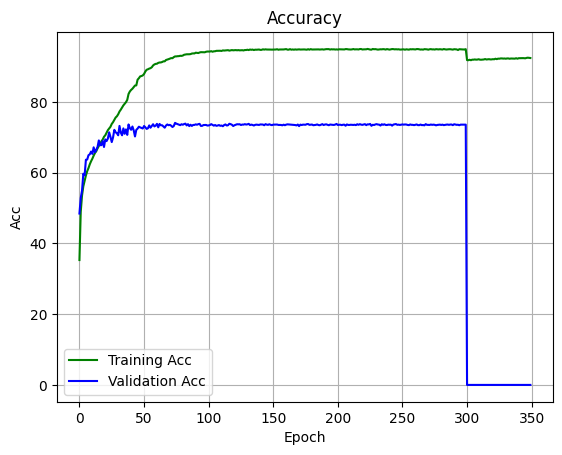
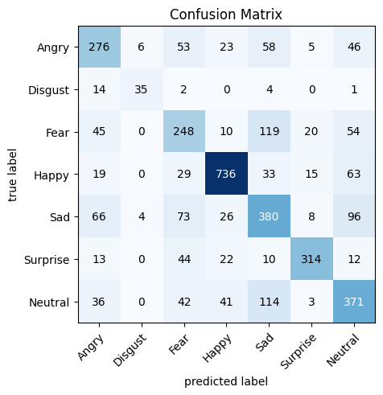
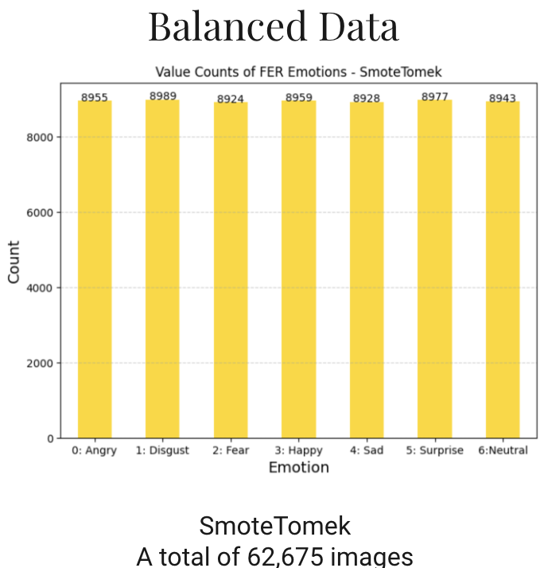
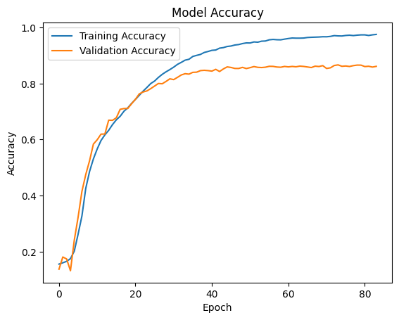
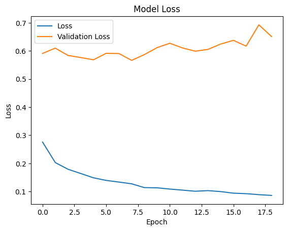

Facial Expression Recognition
- Masa Tantawy
- Malak Gaballa
Problem Statement
Given images of human faces showing different expressions, the model should be able to categorize each image into one of 7 categories , each representing a facial expression. These are: 0=Angry, 1=Disgust, 2=Fear, 3=Happy, 4=Sad, 5=Surprise, 6=Neutral.
Dataset
Considering all available datasets, FER2013 emerges as the preferred choice for our research endeavors. One of its standout features is its complete availability on open-source platforms without any access restrictions. This accessibility makes it incredibly convenient for researchers like us to work with. The dataset contains 35,887 facial grayscale images, each restricted to the size of 48x48 pixels.
| Dataset Size | Number of Images | Image Dimensions | Categories |
|---|---|---|---|
| 63 MB | 35,887 images | 48x48 grayscale | 7 |
Input/Output Examples
Model Input: Image - vector of pixels for a 48x48 pixel grayscale image,
Model Output: A number from 0 to 6 which indicates the facial expression illustrated in the image.
State of the art
After going over all the state of the art models, .....
Orignial Model from Literature
The VGGNet model , short for Visual Geometry Group Network, is a classical CNN used in large-scale image processing & pattern recognition. The network consists of 4 convolutional stages and 3 fully connected layers. The convolutional stages are responsible for feature extraction, dimension reduction, and non-linearity. The fully connected layers are trained to classify the inputs as described by extracted features.
- Each convolutional stage has 2 convolutional blocks & a max-pooling layer.
- Convolution block: consists of a convolutional layer, a ReLU activation, and a batch normalization layer. Batch normalization is used to speed up the learning process, reduce the internal covariance shift, and prevent gradient vanishing or explosion.
- The first 2 fully connected layers are followed by a ReLU activation. The third fully connected layer is for classification.
The baseline model, trained over 350 epochs, produced the following results:
- Top-1 Accuracy = 73.28%
- Top-2 Accuracy = 86.45%
|  |
- Training: FER2013 dataset achieving an accuracy of 73.28%
- Research Paper: Facial Emotion Recognition: State of the Art Performance on FER2013
- Repository: Github link
- Frameworks: Pytorch
Proposed Updates
Add all the model updates you made here, need as many images as you wish
Update #1: Model Reconstruction using Keras TensorFlow
Due to the inability to modify the model hyperparameters using Pytorch, the exact model architecture was constructed using Keras TensorFlow for easier model modifications.
The model, however, trained only over 180 epochs due to GPU constraint. Using a customized evaluation function,the following metrics and plots were yielded:
- Top-1 Accuracy = 65.76%
- Top-2 Accuracy = 79.91%
- Top-3 Accuracy = 88.49%
 |
 |
Update #2: Data Imbalance Handling Techniques
Since the dataset was highly imbalanced, it was decided to address this issue by implementing Random Oversampling, SMOTE and SmoteTomek to rebalance the dataset and enhance model generalization. Undersampling was excluded since deep models require large datasets. SmoteENN was also excluded as it reversed the imbalance. The following plots demonstrate the techniques that were implemented and their effect on the dataset distribution.
|  |
Update #3: Hyperparameters Tuning
To optimize model performance, hyperparameter tuning took place. This involved experimentation with various regularizers and optimizers, alongside adjusting learning rates to gauge their impact. L1 regularization failed to show significant improvements in performance or address overfitting concerns. Similarly, the SGD optimizer yielded suboptimal results. However, after thorough experimentation, it was discovered that setting the learning rate to lr=0.0001 with the ADAM optimizer led to the most promising outcomes. To prevent overfitting, an early stopping mechanism was implemented, which halted training if the model's performance didn't improve for 10 consecutive epochs. This approach ensured continued learning without getting stuck on the same data. This resulted in the training process stopping after 54 epochs only with slightly improved results as follows:
- Top-1 Accuracy = 66.15%
- Top-2 Accuracy = 82.22%
- Top-3 Accuracy = 90.89%
Update #4: Modelling on Balanced Datasets
After applying techniques to handle dataset imbalances, each dataset was split using sklearn into three parts as the original dataset: training, testing, and validation sets, with an 80/10/10 ratio. The model, fine-tuned with hyperparameters, was then trained separately on each dataset, resulting in three unique models. This approach ensured thorough evaluation and tailored performance across different datasets.
| Random Oversampling | SMOTE | SmoteTomek | |
|---|---|---|---|
| Accuracies |
|
|
|
| Number of Epochs | 84 epochs | 19 epochs | 73 epochs |
| Accuracy Plot |  | ||
| Loss Plot |  | ||
| Confusion Matrix |
Update #5: Augmented and Auxiliary Data
For Data Augmentation, a random balanced subset of the dataset has undergone different combinations (none, one, or multiple) of horizontal flipping, rotation, gaussian noise addition with different ratios from given set ranges.
| Random Oversampling | SMOTE | SmoteTomek | |
|---|---|---|---|
| Accuracies |
|
|
|
| Accuracy Plot | |||
| Loss Plot | |||
| Confusion Matrix |  |
For Auxiliary Data, the AffectNet Dataset was used. It originally contained 8 categories of 96x96 coloured images. Before being added to the model, only the common 7 categories were selected, images were converted to grayscale and resized to 48x48.
| Random Oversampling | SMOTE | SmoteTomek | |
|---|---|---|---|
| Accuracies |
|
|
|
| Accuracy Plot | |||
| Loss Plot | |||
| Confusion Matrix |